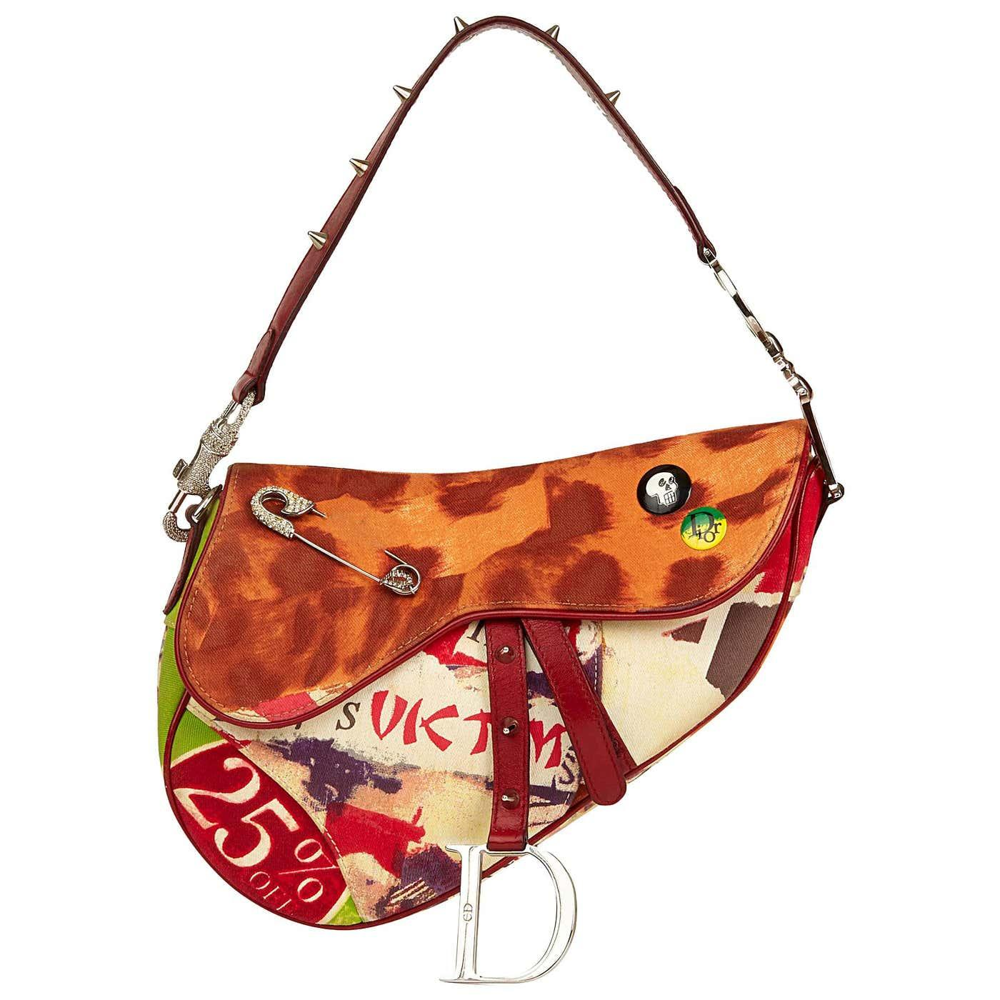
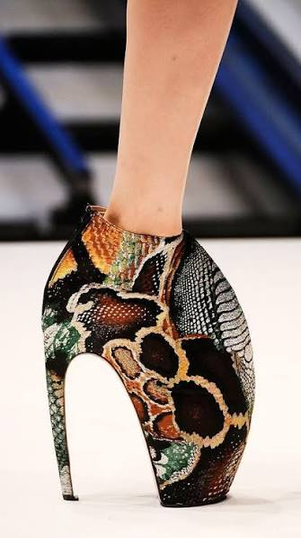
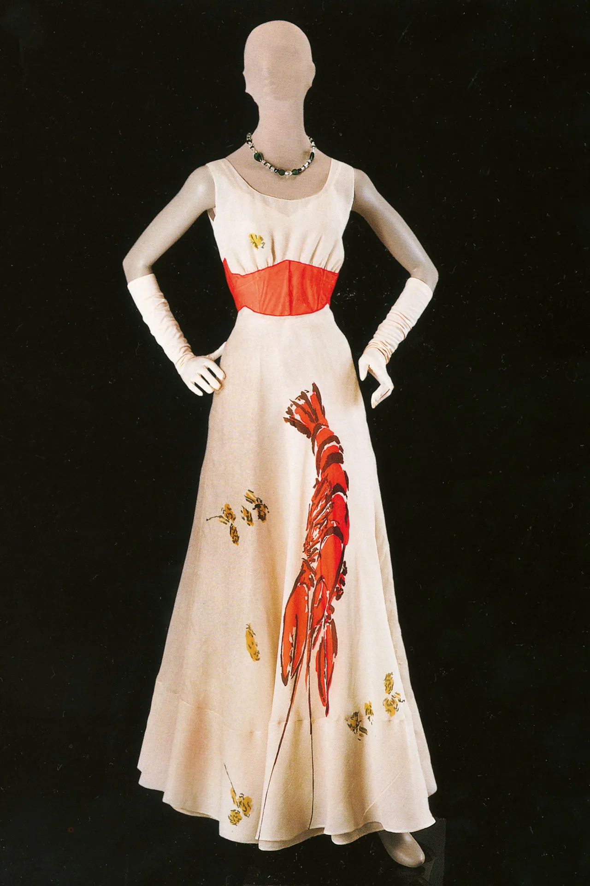
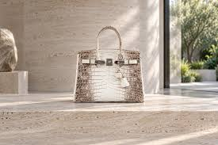

What began as a radical split-toe silhouette became one of
fashion's most recognizable objects. I love the Tabi because
its identity does not depend on a visible logo. The shape
itself became the house code.
Form · Identity · Anti-Luxury
002
Christian Dior by John Galliano
The Saddle Bag
Introduced · SS00

An accessory
becomes an icon.
Few accessories demonstrate the power of silhouette as clearly
as the Saddle. Its asymmetric form turned a handbag into a visual
code: recognizable before the Dior name is even read. Galliano-era
editions are particularly fascinating because the same shape could
absorb embroidery, print, denim and ornament without losing its identity.
Silhouette · Recognition · Collectibility
003
Thierry Mugler
La Chimère
Haute Couture · FW97–98
Part dress.
Part creature.
Part sculpture.
What fascinates me about the Chimère gown is that its fantasy
cannot really be separated from the extraordinary work required
to construct it. It represents fashion at the point where clothing
begins to behave like an object worthy of preservation.
Craftsmanship · Fantasy · Transformation
004
Alexander McQueen
Armadillo Boot
Plato's Atlantis · SS10

Shoe?
Sculpture?
Creature?
The Armadillo boot pushes the accessory almost beyond wearability.
Its exaggerated structure changes the body, the walk and the
silhouette itself. Practicality was never the point. The object
exists somewhere between footwear, sculpture and image.
Sculpture · Body · Spectacle
005
Comme des Garçons
Body Meets Dress,
Dress Meets Body
Rei Kawakubo · SS97
What if the
garment changes
the body?
Padding appeared in places fashion traditionally tries to flatten,
narrow or conceal. The collection distorted the conventional
silhouette and forced the viewer to reconsider where the body
ended and the garment began. Beauty here was not about correcting
the body. It was about inventing another one.
Body · Proportion · Provocation
006
Elsa Schiaparelli × Salvador Dalí
Lobster Dress
1937

Fashion meets
surrealism.
Schiaparelli understood that fashion could participate in the
same visual conversation as art. The lobster transforms an
otherwise elegant evening dress into something strange, humorous
and deliberately provocative. It is precisely that tension that
makes the piece unforgettable.
Surrealism · Collaboration · Provocation
007
Hermès
Himalaya Birkin
Collectible Luxury

When does
an object
become myth?
The Himalaya Birkin interests me not simply because it is expensive,
but because it demonstrates how a luxury object acquires mythology.
Material rarity, craftsmanship, restricted availability, celebrity
ownership and auction culture accumulate around the bag until the
object becomes a collectible.
Scarcity · Mythology · Value
008
Guy Bourdin
The Image Before the Product
French Fashion Photography · 1970s
Desire before
explanation.
Before I understood fashion photography as an industry, I understood
the feeling of it: impossible colour, strange framing and images in
which the product could become almost secondary to the world around it.
Bourdin demonstrates that fashion can create desire without needing
to explain it.
Photography · Desire · Narrative
009
Cartier
Tutti Frutti
Art Deco · India → Paris
More can
sometimes
be more.
I keep coming back to Tutti Frutti because it rejects the idea
that sophistication must always mean restraint. Carved coloured
stones, extraordinary combinations and dense ornament become
harmonious through craftsmanship.
Jewelry · Colour · Craftsmanship
001 — ∞
The archive is
never finished.
These objects do not form a complete history of fashion.
They form a personal one — pieces, images and ideas I return
to because each changed the language around it. The Cabinet
will continue to grow as my own understanding of fashion does.